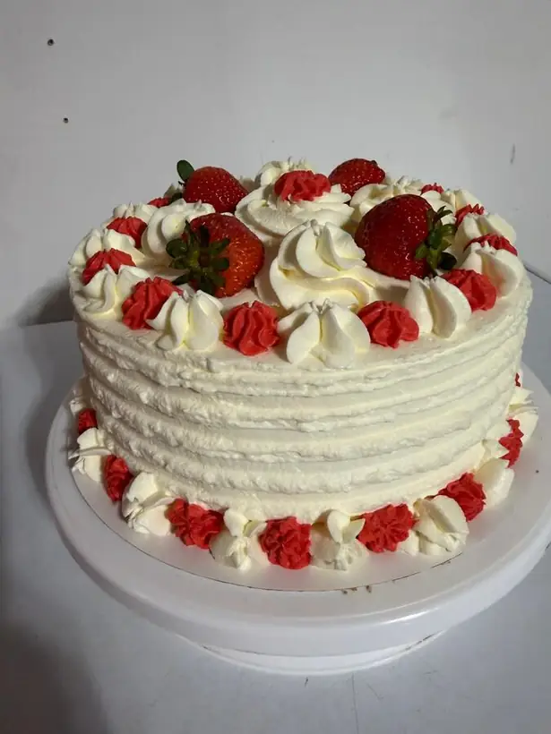

baked with love, from our kitchen to yours
Birthday cakes, Swiss rolls and breakfast cakes baked in small batches after you order — never sitting on a shelf. Tell us the occasion and the design you have in mind, and we'll confirm the details with you.

Text us or DM us on Instagram with what you'd like and when you need it.
We'll confirm your order, any custom design or dishes, and your pickup date.
Pickup only — no delivery. Ask about same-day and next-day availability.
Yes. Message us the occasion, size and design idea, and we'll confirm what we can make and the price before you order.
Our medium birthday cake is $50. Custom designs are priced when we confirm your order.
No — all orders are picked up in Katy, Texas.